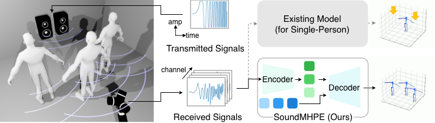
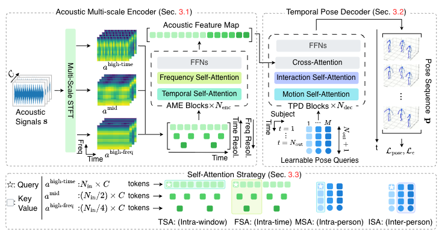
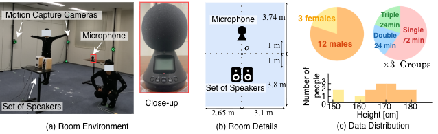

Sound-based Multi-Person 3D Pose Estimation

We propose SoundMHPE, a sound-based multi-person 3D pose estimation method. Our system adopts an active acoustic sensing approach, where a speaker emits a transmitted signal and the received signal is used for the model input. While existing acoustic pose estimation models are limited to single-person estimation, SoundMHPE enables simultaneous estimation of multiple individuals.
Abstract
Can we recover the 3D poses of multiple people using only sound? This paper presents the first attempt to estimate multi-person 3D poses solely from acoustic signals. Estimating the poses of multiple individuals using acoustic signals is inherently challenging due to the superposition of motion-dependent signal variations. Unlike single-person scenarios, the presence of multiple subjects leads to overlapping acoustic signatures, making it difficult to attribute specific signal changes to an individual's pose. Furthermore, the complexity is compounded by inter-person reflections, which introduce intricate propagation delays that obscure the temporal motion-acoustic relationship. To address these issues, we propose SoundMHPE (Sound-based Multi-person Human Pose Estimator), a novel encoder-decoder framework consisting of two key components. First, the Acoustic Multi-scale Encoder captures diverse temporal and fine-grained frequency features to isolate subtle acoustic signatures from complex, overlapping signals. Second, the Temporal Pose Decoder employs an attention mechanism to disentangle multi-person information across successive frames. To validate our approach, we constructed the 6-hour Acoustic Multi-person Pose (AMP) dataset consisting of 432K synchronized frames of multi-person pose and acoustic data, and demonstrated that our SoundMHPE outperforms baseline models.
Proposed Method

Proposed framework for sound-based multi-person pose estimation. (Top left) SoundMHPE first employs an Acoustic Multi-scale Encoder to generate spectrograms with diverse time–frequency characteristics and obtain an acoustic feature map. (Top right) Subsequently, in the Temporal Pose Decoder, we assign each individual a set of learnable pose queries. (Bottom) These encoder and decoder modules leverage customized self-attention to jointly model spatio-temporal dynamics, multi-resolution features, and inter/intra-person pose relationships.
Dataset

Since we are tackling a novel task for which no existing dataset is available, we constructed the 6-hour Acoustic Multi-person Pose (AMP) dataset. This dataset consists of synchronized acoustic data acquired through active acoustic sensing and 3D coordinate data of multiple individuals. (a,b) Our measurement environment consists of a set of speakers and a microphone for active acoustic sensing, along with motion capture cameras to obtain ground-truth poses. (c) Our AMP dataset consists of 12 male and 3 female participants, with heights ranging from 150cm to 181cm. The participants were divided into three groups. For each group, we collected 72 minutes of single-person data, 24 minutes of double-person data, and 24 minutes of triple-person data.
Results

In the double-person scenario, the baseline models struggle to track dynamic “twisting” motions, whereas SoundMHPE reconstructs them with high fidelity. Similarly, for the triple-person data, SoundMHPE successfully estimates “raising both arms”, a motion characterized by a small sound reflection area, even when performed alongside a walking individual. We hypothesize that for motions involving subtle acoustic perturbations, such as twisting or arm raising, the integration of fine-grained frequency features via the AME and the explicit modeling of inter- and intra-person dependencies in the TPD are particularly effective.
BibTeX
@inproceedings{oumi2026sound,
title={Sound-based Multi-Person 3D Pose Estimation},
author={Oumi, Yusuke and Shibata, Yuto and Irie, Go and Kimura, Akisato and Aoki, Yoshimitsu and Isogawa, Mariko},
booktitle={ECCV},
year={2026},
}